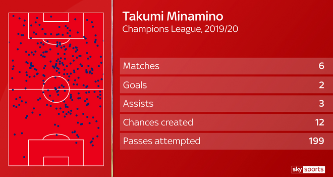
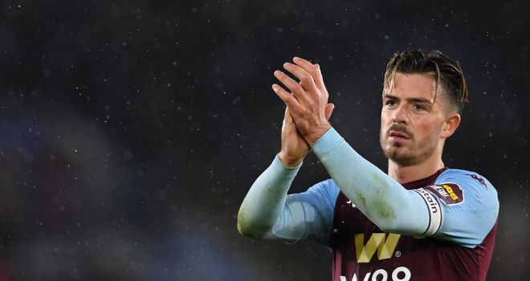

Latest football news
FRANCIS, SURMAN LEAVE BOURNEMOUTH
Experienced duo Simon Francis and Andrew Surman have left relegated Bournemouth after being told they would not be offered new contracts. Club captain Francis spent eight-and-a-half years on the south coast and his deputy Surman seven, both playing key roles in the club’s rise to the Premier League and five-season stay among the big boys. A statement released on the club’s official website said: “AFC Bournemouth can confirm that club captain Simon Francis and vice-captain Andrew Surman will not be offered new contracts and have left the club. “The long-serving pair, whose contracts expired at the end of July, have been an integral part of the club’s rise up the football pyramid, culminating in a five-year stay in the Premier League. “However, following the Cherries’ relegation last month, it has been agreed that both players will be free to find new clubs, and the club wholeheartedly thanks them for their incredible commitment over the past decade.” Bournemouth have confirmed that full-back Charlie Daniels, who is also out of contract, will train with the club in pre-season as he continues to work his way back from a dislocated knee.
AUBA SET TO SIGN NEW ARSENAL DEAL Pierre-Emerick Aubameyang is close to ending speculation about his future by signing a new contract with Arsenal.
More news
Juventus are interested in signing Arsenal striker Alexandre Lacazette. Wolves striker Raul Jimenez is also on the list of strikers being considered by the Serie A champions while Atalanta's Duvan Zapata, Atletico Madrid's Alvaro Morata, Napoli's Arkadiusz Milik and Roma forward Edin Dzeko are also of interest. Current Juve striker Gonzalo Higuain is expected to leave, with just a year remaining on his contract.
Liverpool boss Jurgen Klopp has urged patience with new signing Takumi Minamino after he was officially unveiled at the club.
The 24-year-old has joined the Premier League leaders from Austrian club Red Bull Salzburg after his £7.25m release clause was triggered last month. With former Salzburg players Sadio Mane and Naby Keita already at Anfield, Klopp is hoping the player will quickly feel comfortable enough to be considered for a starting place against Everton in the FA Cup on Sunday. Before then it is a watching brief for the Japan international as Liverpool host Sheffield United on Thursday evening, but nevertheless Klopp is putting no pressure on Minamino to perform straightaway.
"It's important he settles and that we've signed the player he was at Salzburg, so at the moment he just has to be who he is," Klopp said. "I told him we signed Minamino from Salzburg - the guy who played like crazy against us - be like that and we will see how it develops. "But certainly at this part of the season we will use him now and not in 15 weeks' time. "Will he be the finished article in March though? I don't know. We'll start learning about each other from now, work on his natural skills and give him all the time he needs. "At the moment we have a really good football team and we have some of the best offensive players in the world. "We didn't bring him in to accept he is fifth, sixth-choice but he can play many positions which means options. It would be nice if everyone gives him a bit of time though."
Transfer window: stars who could be on the move this summer
Jack Grealish: Decision time looming
Jack Grealish has admitted he is "not too sure" about his Aston Villa future - and that is little surprise with the hype surrounding him. Only Kevin De Bruyne made more chances across the entire Premier League season, and the Villa captain made almost a quarter of the club's scoring opportunities on his own. That sort of creativity is difficult to teach, which is something clearly not lost on long-term suitors Manchester United, who for a long time have appeared to be leading the chase for his signature. Although he has spent the season largely cutting in from the Villa left flank, there looks to be a Grealish-shaped hole on the right of Ole Gunnar Solskjaer's front three - after a bright start, summer recruit Dan James' form has faded, while Mason Greenwood's future could be more central. However, United's interest has cooled on the back of Villa's survival, which has placed a price tag upwards of £80m on Grealish's head. United chief Ed Woodward has admitted the club has not been exempt from the effects of the coronavirus pandemic, and the 24-year-old's signature would make a significant dent in their transfer kitty.
Ron WalkerMesut Ozil: What's the exit plan?

How do you solve a problem like Mesut Ozil? It is a long running saga that never seems to end, with Arsenal's highest earner appearing happy to see out his £350,000-a-week contract in north London. Gunners head coach Mikel Arteta has appeared to draw a line under the saga. Ozil, who has a year left on his Arsenal contract, does not look to be part of the Spaniard's plans. The stark fact of the matter is that Ozil didn't play a minute of football after the Premier League restarted and wasn't even on the bench for their final two matches. It is no secret Arsenal would love to get Ozil's mammoth wages off their wage book but will Arteta's strong management be enough to convince the German it is time to leave the Emirates Stadium? Are there even any clubs interested in signing him and paying his mammoth wages after the financial strain of the coronavirus pandemic? Will Arsenal even pay some of his wages to finally get the World Cup winner away from the club? These are the questions the Gunners will finally hope to have answers to as they look to solve their Ozil conundrum.
Olive YewWilfried Zaha: Time up at Palace?

It was no secret that Wilfried Zaha wanted to leave Crystal Palace last summer, but the move didn't happen and despite his initial disappointment he managed to get his head right and focus on doing his best for Palace. But a year on, and Zaha finds himself in the same situation. Palace haven't matched his on-field ambitions, he's changed agents and he recently said he wanted to win trophies. Palace held firm on their £80m valuation last summer but that sort of asking price will be unlikely with the current Covid-19 pandemic expected to affect spending. Arsenal were interested last season - as were Everton. Crystal Palace signed off with a 1-1 draw against Tottenham but manager Roy Hodgson admits he faces another battle to keep hold of Zaha. "It's a dilemma for the club and for him if he is so set on leaving," he said. "We still like him very much, we can't make him like us. It's obviously affected him because his form in the last few weeks has been quite poor considering what he is capable of doing. I don't have an answer."
Another summer of speculation awaits. Lewis JonesKai Havertz: Germany's young star on his way to the Premier League?

There is considerable hype surrounding Germany's hottest prospects, Timo Werner and Kai Havertz. Chelsea have already snapped up the former from RB Leipzig and they are eager to prise the latter away from Bayer Leverkusen as well. But at just 21 years old, Havertz will cost a premium price - reportedly in the region of £70-90m. Why so much? The versatile forward set a Bundesliga record for most goals by a teenager with 17 last season and became the youngest player to reach 100 league appearance in the German top-flight this season.

What will Frank Lampard be getting? According to Statsbomb, Havertz is strikingly similar to fellow youngster Christian Pulisic - who began to look capable of filling Eden Hazard's boots as the season progressed this season. Chelsea appear to be in the hunt for even more youthful flair - as if they needed any more.
Gareth Bale: Will he settle for fringe role at Real?

Gareth Bale's spell at Real Madrid has descended into a soap opera. During their recent charge towards La Liga glory, he was most commonly seen joking around in the stands, an unused substitute with little prospect of winning back his place in the team. When the squad threw Zinedine Zidane into the air in celebration after the 2-1 win over Villarreal that sealed the title, Bale watched quietly from the fringes. His relationship with Zidane has been fractured since the 2018 Champions League final win over Liverpool, when he was left out of the starting line-up only to come off the bench and score the decisive goals, and recent evidence suggests it is now broken beyond repair. Bale has only started five games since the turn of the year and one since the restart. The problem for Real Madrid, of course, is that Bale has a contract - and an extraordinarily lucrative one at that - until 2022. The Welshman was close to sealing a move to China last summer, but the deal fell through and his agent, Jonathan Barnett, now insists he has no plans to leave. It remains to be seen whether any Premier League sides could try to change his mind.
Nick WrightLionel Messi: The beginning of the end of his time at Barca?

There is no chance of Lionel Messi leaving Barcelona this summer. The Argentina star has vowed to stay at least until the end of his current contract in 2021. But this window could mark the beginning of a lot of speculation over his future after a tumultuous campaign at the Nou Camp. Messi is unsettled and frustrated at Barca and - for the first time - is seriously thinking of leaving next year, having broken off from new contract talks. He is fed up of conflict with the board, and of widespread rumours that he is the one that calls the shots at the club. Inevitable links will be made with Manchester City for as long as Pep Guardiola, whom he considers to be the best coach he has worked with, is still the manager, while Inter Milan boss Antonio Conte has labelled their link with Messi as "fake news". Regardless, there is a lot of time still to pass before his contract expires, so a lot of time to either work things out or widen the rift even further.
Lyall ThomasHarry Kane: Sticking with Spurs?

Remember the stir created during lockdown when Harry Kane told Sky Sports he would be prepared to leave Tottenham if he felt the club wasn't progressing? "I love Spurs, I'll always love Spurs. But it's one of those things - I've always said if I don't feel we're progressing as a team or going in the right direction, then I'm not someone to just stay there for the sake of it," said Kane. "It all depends on what happens as a team and how we progress as a team. So it's not a definite I'm going to stay there forever - but it's not a no either." His talent up front needs no debate. He is an outstanding striker and would certainly bring goals to any team he plays for with Golden Boots from the Premier League (twice) and World Cup as proof. Any forward who performs well will be loved by the fans, but there would be the same relationship between player and another club that Kane currently has with Tottenham? This will likely be on his list of considerations but so will trophies and a player of his calibre deserves to be lifting them. Mourinho is often described as a serial winner but with Tottenham being that 'almost, but not quite' club, can he instil a winning mentality that will convince Kane to stay with his boyhood side? And would he have a better chance of winning silverware with the likes of Manchester United? Or should he be aiming right for the top where trophies are a requirement - not an aim - such as Real Madrid, who have been linked with Kane in the past. This season has been the antithesis of progress for Tottenham with a dramatic change of manager and a first finish outside the top four since the 2014/15 season. Kane has once again had his injury problems and may want to wait a little longer to see if Mourinho can inspire an improvement at Spurs. But there would certainly be plenty of suitors willing to meet his demands...
Charlotte MarshDeclan Rice: West Ham star would not be cheap

Declan Rice's future at West Ham depended a great deal on what division the club would find themselves playing in next season. With the Hammers' Premier League status now assured they have at least guaranteed Rice will not be leaving on the cheap. That is if he even moves at all. Despite interest from Chelsea - the club that released Rice at the age of 14 - West Ham have been clear they have no desire to sell the England international. "He's under contract...he's not going anywhere unless you get one of those steel vans that have the cash in it," Hammers boss David Moyes said after the final day of the Premier League season. Moyes is keen to build his team around young players such as Rice and, with the likes of Ben Johnson and Grady Diangana also at the club, the Scot's plan for a new, youthful and vibrant West Ham could begin to take shape quite quickly. If Chelsea do decide to follow up their interest this summer, there is no doubt they will need deep pockets - West Ham value Rice at around £80m. In previous years, West Ham have experienced the likes of Dimitri Payet and Marko Arnautovic trying to force through moves away from the club. They were successful in doing so. However, Rice is unlikely to deploy such tactics. History tells us that there will come a time when West Ham will eventually part ways with their very best talent - but, for now at least, they can demand the utmost amount for their star man.
Nick LustigBen Chilwell: Can Chelsea or City convince Leicester to sell?

Could Chelsea's summer spending spree continue with a move for Leicester's Ben Chilwell? Frank Lampard is known to be a keen admirer of the left-back, who has impressed for the Foxes for the last three seasons and become a regular starter for England in the process. Chelsea are unlikely to be the only side who register an interest, however, with Sky Sports News reporting that Manchester City are also eager to secure his services. Pep Guardiola even went out of his way to compliment the 23-year-old at the Etihad Stadium on the pitch following City's win over Leicester last season. "He just said he thought I was a really talented player," revealed Chilwell afterwards. Leicester, however, are unlikely to allow him to leave cheaply. Chilwell was ruled out of the season finale due to a foot injury, but manager Brendan Rodgers insists he has not played his last game for the club and says he is confident of keeping him. "There's no intention to sell Ben Chilwell and absolutely no need to sell," he said recently. "The message is: He's not for sale."
Nick WrightPaul Pogba: Will Frenchman put pen to paper?

Paul Pogba's timely return to form and the Manchester United first team coincided with the club's post-lockdown resurgence that secured Champions League qualification on the final day of the Premier League season. But for those thinking Pogba's revival finally puts an end to speculation surrounding the Frenchman's future, well, things are not as simple as that. For all the talk that Pogba's recent form will be rewarded with a lengthy new contract at Old Trafford, speculation over potential moves to Real Madrid or Juventus will rumble until his future is secured. It is a situation agent Mino Raiola will look to take advantage of as he seeks the best deal for his client, and whether Pogba signs an extension or leaves United, you can almost guarantee he will be at the centre of a transfer saga that could define this window.
Jack WilkinsonAdama Traore: The Plan B everyone wants?

After a quiet first campaign at Wolves in which he made only eight league starts, Adama Traore enjoyed a stunning second season, not only wowing Wolves fans but emerging as the neutrals' favourite. He is the Premier League's most explosive player. Traore saved some of his best work for the biggest occasions - scoring at home and away in wins over Manchester City - but he has been a consistent performer too. As well as topping the dribbling charts, his nine Premier League assists ended all talk of a lack of end product. Who should be interested? Just about every team in the world. Jurgen Klopp at Liverpool is an admirer. Part of the attraction is that coaches need not have a ready-made role for him in their line-up - he is a one-man plan B. An option from the bench capable of changing any game. If there is a problem it could be the price. At 24, and under contract until 2023, Wolves are well aware of his value. One fee floated is as high as £135m. It might not take anywhere near that much to prise him away from Molineux, but expect big numbers involved.
Adam BateNathan Ake: Could the Dutchman solve City's defensive problems?

Manchester City are reportedly in the hunt to snap up Bournemouth centre-back Nathan Ake this summer. Of the current Premier League defenders aged 25 or under, only Hector Bellerin and Luke Shaw have racked up more top-flight appearances. Ake's positional development - from defensive midfielder, to left-back, to centre-back - also provides a versatility which would appeal to the likes of Pep Guardiola. Since his permanent switch in 2017, the Cherries' win percentage jumps 17 per cent with him in the team and they concede fewer goals. That blend of youth, experience, versatility and effectiveness bodes well for any suitor...and there will inevitably be a thought that the Cherries are ripe for picking following their relegation.
Adam SmithPhilippe Coutinho: Back to the Premier League?

Another summer, another guessing game of where Philippe Coutinho will end up playing next as his season-long loan spell with Bayern Munich draws to a close. The Bundesliga champions have the option to sign the Brazil international from Barcelona for €120m this summer, but are thought unlikely to take that up after an underwhelming campaign in Bavaria that has often seen Coutinho left out of the club's key fixtures. With the 28-year-old having spent five hugely successful years with Liverpool, though, do not be surprised to see him back in the Premier League next season, with the likes of Chelsea, Tottenham, Arsenal and even his former club reportedly weighing up moves for the playmaker.
Richard MorganJames Rodriguez: Who will take the risk?

The name James Rodriguez epitomises a long-running transfer saga. For five years and counting, his future at Real Madrid has been up for much debate, coming in and out of the transfer headlines when he has been linked with a handful of Premier League clubs, with a two-year loan at Bayern Munich wedged in. Manchester United, Liverpool, Chelsea, Arsenal, Tottenham, and even Everton, Newcastle and Wolves: they have all been linked with the Colombian at some point over the past half a decade as James found himself on the periphery of Zinedine Zidane's plans. With his contract up next summer, now might be the time for a permanent move and for James to feel loved by his employers. At Real, he simply has not been. At 28, he still has plenty to offer - he scored 15 and made 20 assists in 67 games at Bayern - but his wages will be a problem for many, reported to be around £160,000-a-week. Even if James leaves for a cut-price deal, let's say £20m, he represents a risk for many Premier League sides. It will be intriguing to see where he finally goes, and whether a change of scenery can prompt him to recreate the form that saw him one of the world's most-wanted players at the 2014 World Cup.
Kalidou Koulibaly: Finally on his way to the Premier League?

False peaks have long been found on the path to signing Napoli's man-mountain Kalidou Koulibaly, dubbed 'K2', but the stubborn Italian club are set to make the world's most sought-after defender available if they finalise a big-money deal for Lille forward Victor Osimhen. Liverpool's strict transfer policy prohibits them spending more than £60m on a 29-year-old. But Manchester City, equipped financially and untethered from a Champions League ban, could ditch their usual age-profile and begin an ascent. Nathan Ake would be cheaper, but the authority, speed and experience of Senegal captain Koulibaly makes him an ideal partner to Aymeric Laporte, and Pep Guardiola's long-awaited replacement for Vincent Kompany.
Allan Saint-Maximin: Will Newcastle hold onto prize asset?

Transfer plans at St James' Park remain in torturous limbo as takeover silence continues to exhaust and deflate but, whatever the eventual outcome, Newcastle fans will be desperate to see Allan Saint-Maximin dancing through defences in the black and white again next term. Tyneside has a new great entertainer - only Adama Traore and Wilfried Zaha completed more dribbles in the Premier League season - but more of those edge-of-seat slaloms are starting to yield end product: the Frenchman has added four assists to his three goals and has created more big chances than any other team-mate. Steve Bruce might have served him a string of fines for "earrings, headbands and all sorts" but he reckons the £17m arrival from Nice last summer is the "best pound for pound signing in the Premier League" and has warned suitors - PSG, Napoli and Arsenal have been linked with a move - that "there is no chance" of him leaving. Bullish talk, but this is Newcastle, where anything can happen.
Thiago Alcantara: In search of a new adventure

It appears as though Thiago Alcantara's time in Germany is at an end after Bayern Munich chairman Karl-Heinz Rummenigge told Bild: "Alcantara wants to leave. It looks like he may want to do something new at the end of his career." What that new adventure will be is still to be decided, but the Spain international will not be short of suitors after seven trophy-laden years at the Allianz Arena and a knocked-down transfer fee with his Bayern contract expiring next year. It was Man City boss Pep Guardiola who took the Barcelona youth product with him when swapping Catalonia for Bavaria in 2013, shortly after his hat-trick saw Spain crowned European U21 champions, so do not rule out the pair being reunited at the Etihad next season. Meanwhile, Liverpool are also reportedly interested in signing the 29-year-old - whose father is Brazil World Cup winner Mazinho - in order to add some flair to the champions' workmanlike midfield.
Thomas Partey: Finances could see Atletico ace depart

Arsenal are reportedly ramping up their summer pursuit of Atletico Madrid's Thomas Partey, and it is clear to see why he is a player in such high demand. Partey's intentions and his reachable £45m-buyout clause make him one of Europe's most sought-after players. Atletico are willing to offer Partey double his current £65,000-a-week wages and are keen to insert a new £91m-buyout clause in his contract to fend off interest from elsewhere. But Arsenal are not the only European club to have been linked with the player plucked from Ghanaian club Odometah FC in 2012. Juventus and Manchester United are also said to be paying close attention to developments. Atletico accrued £178m in debt with Mexican billionaire Carlos Slim's company Inbursa in order to facilitate their move to the Wanda Metropolitano - and that is not due to be paid off in full until 2028. Diego Simeone is the world's highest-paid manager, and while he has taken a 70 per cent pay cut from his £36.2m salary, Atletico will be feeling the financial strain of the pandemic more than most clubs - less than a year after Joao Felix's arrival for a club-record £113m from Benfica. The emergence of Marcos Llorente as Partey's potential successor in the Atletico midfield looks like softening the blow of any sale this summer.
Leave A Comment
-
Facebook2.530 Fans
-
Twitter2.046 Fans
-
Google1.170 Fans

How To Quit Smoking Using Zyban
- May 19, 2019
- 3 Comment

Decorate For Less With Art Posters
- May 19, 2019
- 3 Comment

Home Business Advertising Ideas
- May 19, 2019
- 3 Comment

Lasik Doesn T Stop Your Eyes From Aging
- May 19, 2019
- 3 Comment
Tomi
Thanks
Like ReplyBusayo
Good One
Like ReplyPrecious
Great !!!
Like Reply